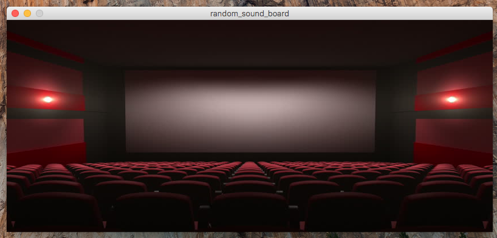
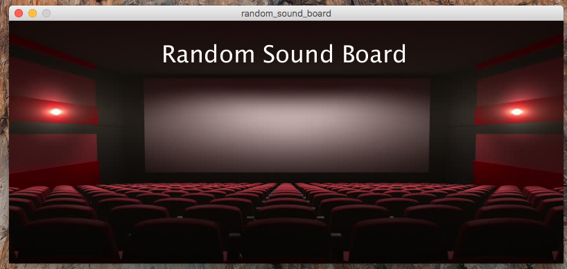
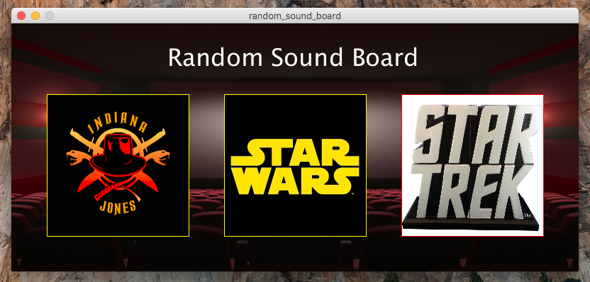

In this (extra-credit) assignment, you’ll be implementing a sound-board application that incorporates randomness. You will need to both play sounds and display images. Below is a video-recording showing the behavior of a solution to this assignment:
The high-level requirements for this program are as follows:
Each button should represent a particular theme. For the example, I chose Indiana Jones, Star Wars, and Star Trek. You can re-use these themes if you want, or you can choose your own. The images on each button should properly represent the theme.
You should find three sound files for each theme.
When a particular button is pressed, the program should randomly choose one of the three sound files to play, and then play it.
You should use the random() function to help with this!
You can choose whatever theme that you want for this assignment (it doesn’t have to be movie-themed like the example). To find sounds for the theme of your choice, just Google for sound files. You can also use https://freesound.org/.
If you choose to create a program with the same theme as mine, that is OK.
If so, I am providing all of the images and sound files.
The sound files beginning with ij are for Indiana Jones, the sw ones are for Star Wars, and the st ones are for Star Trek.
Click on the links to the files to access and then download them to your computers.
Remember: the sound files go in the data directory.
You can also use websites like https://freesound.org/
If you break the problem down into smaller “chunks” it becomes much more manageable to tackle. I recommend you use the following strategy to complete:
Select a good background image and then set it as the background of your canvas. Make sure the image size fits will with the canvas size.

Choose a appropriate title for your program, and display it at the top. Make sure you choose a font color that doesn’t blend in with the background image too much.

Next, place all of the image buttons on the canvas, like you see pictured. Don’t worry about playing the sounds for now.

Now, add in the logic to play a sound with each image click. In this step, don’t worry about choosing a random sound. Instead, just play one particular sound for each button. Get your program so that each button press plays a unique sound, but not a randomly-chosen one. We have done button-pressing in several of the past sections and assignments, so refer to those if you can’t remember how to set-up a button!
Now, add in the randomness!
When each button is pressed, you should have it randomly choose between the three sounds and play one of them.
You should use the random() function for this.
You can generate a random integer between 1 and 3.
Once you have this number, use it to select/load one of the sounds and then play it!
All of your programming should be well-formatted and easy for the graders to read and comprehend. You should follow the style guidelines that we have discussed in class. Each program file should have a header comment at the top that has roughly the following format:
/*
* Author: Student Name
* Description:
* A short description of what this program does!
*/
Each function should have a descriptive block-comment above it, and other helpful comments.
If any part of your scripts are particularly complex, you should put documentation comments above those lines of code.
Name your program random_sound_board.pde.
This assignment is purely for extra credit, and is not required. Assignments are worth 48% of your total class grade. This assignment may be used to earn-back points lost on previous assignments. Doing this assignment can improve your overall class grade up to 3.5% total.
It is due on 5/2/2018 at 5:00pm (but you may not use a late day).
Turn in each of the files described in the spec to the assignment drop-box in D2L before the due date. Make sure to name the file exactly as this document specifies.